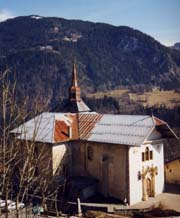

Chalet-hôtel l’Etape (1450 m)

Département, commune : Haute Savoie, commune de St Gervais les Bains
Carte : IGN Top25 3531 ET pli D1
Situation : plateau de la Croix. Adresse : route de la Croix, 74190 St Nicolas de Véroce, tel/fax 04 50 93 20 95
Propriétaire-Gardien : Sylvie et Patrick Jacquemoud
Ouverture et gardiennage : ouvert et gardé du 15/6 au 15/9 et du 20/12 au 10/4, fermé hors ces périodes
Commodités : 19 places (chambres de 2 et 3 p, avec matelas, draps, couvertures, oreiller),
restauration, bar,
eau potable à l’intérieur.
Accès : en voiture (3 km de St Nicolas de Véroce)
Itinéraires à proximité : GR5, TMB, TPMB, sentier du Val Montjoie, sentier du Baroque
Randonnées à partir du refuge :
guide ou site AsF© : Mont Joly, Aiguille Croche
autres randonnées : Mont d’Arbois